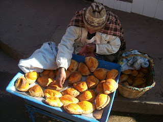
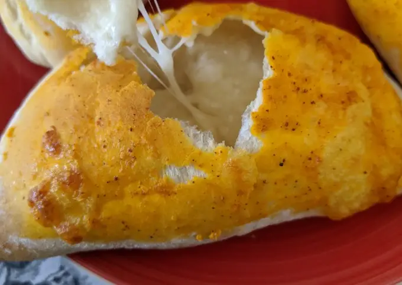
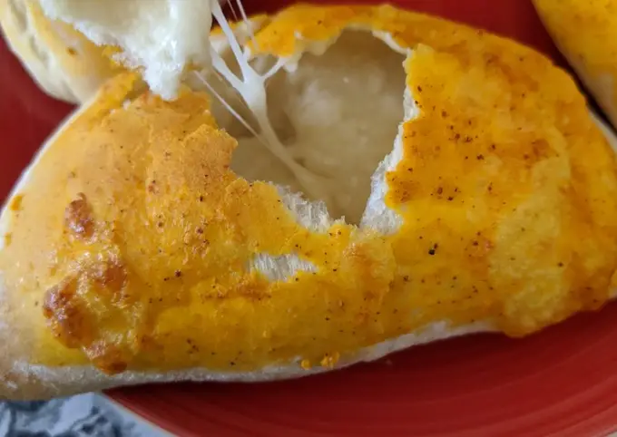
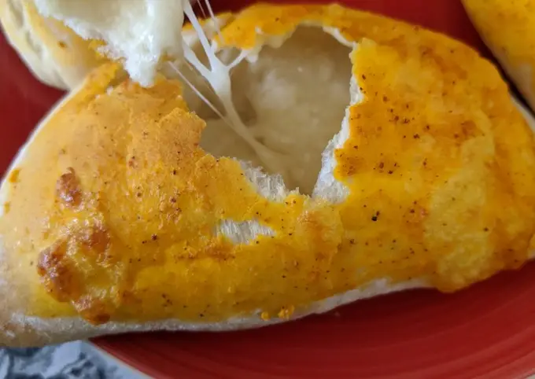

Cómo se preparan las llauchas

 


Las llauchas son empanadas bolivianas cocidas en el horno, típicas de La Paz, rellenas de queso y a veces con ullukus. Se disfrutan calientes, ideales para el desayuno paceño, especialmente en días fríos.
Este platillo es un orgullo de la gastronomía boliviana, con una textura crujiente y un sabor único. Su preparación requiere un proceso especial de amasado y reposo para conseguir la esponjosidad que las caracteriza.
Receta
| Ingredientes | Preparación |
|---|---|
|
|